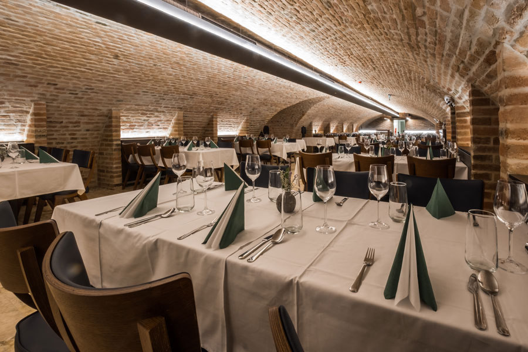

1910-ben nyitotta meg kapuit Budapest szívében, a Városliget közepén a Gundel étterem. Az alapító, Gundel Károly munkássága meghatározó a magyar gasztronómia és vendéglátás szempontjából, hiszen a magyar konyha jellegzetességeit megtartva emelte azt új szintre, mikor a korszerű gasztronómia kifinomultságával és eleganciájával ötvözte a hagyományos fogásokat. Gundel Károly számos könyvet is írt a vendéglátásról, konyhaművészetről. „A vendéglátás művészete” és „A kis magyar szakácskönyv” angolul, illetve németül megjelent művei és cikkei is nagyban hozzájárultak a szerző és a magyar vendéglátás hírnevének öregbítéséhez.
Az épületben 1894 óta állt a Wampetics vendéglő, Gundel Károly 1910-ben vette át az üzemeltetését. A Gundel Ház túlélte a történelem viharait, két világháborút, gazdasági válságokat és az államosítás éveit.

A Városliget az 1800-as évek végére egyre népszerűbb pihenő- és sétatér volt, a társadalom széles rétege számára. Nem véletlen, hogy a szabadtéri programokhoz az evés-ivás is hozzátartozott. Az étterem ennek megfelelően hatalmas volt, akár ezer embert is vendégül tudtak látni a kertben, csúcsnapokon 3 ezer tányér ételt szervíroztak, azaz tömegeket szolgált ki.Az épületben 1894 óta állt a Wampetics vendéglő, Gundel Károly 1910-ben vette át az üzemeltetését. A Gundel Ház túlélte a történelem viharait, két világháborút, gazdasági válságokat és az államosítás éveit.